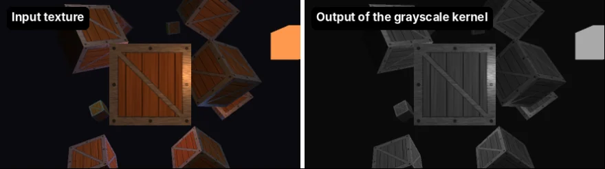

Oltre
Compute shader#
examples/Sources/17-ComputeParticles, si esegue con swift run ComputeParticles. Scarica tutti gli esempi oppure guarda come eseguirli.Una GPU è un computer massicciamente parallelo che, guarda caso, è bravo a disegnare triangoli.
Le compute function, che in Metal si chiamano kernel, ti permettono di usare quella potenza per qualsiasi cosa: elaborazione di immagini, fisica, sistemi particellari, simulazioni, culling, machine learning.
Girano fuori dalla pipeline di rendering, senza vertici né fragment, solo dati in ingresso e dati in uscita.
In Metal il compute non è un'aggiunta.
Usa lo stesso device, gli stessi command buffer, buffer, texture e linguaggio di shading del rendering, quindi i risultati passano dall'uno all'altro senza alcuna copia.
Un primo kernel: elaborare un'immagine#
Un kernel è una funzione marcata kernel che restituisce void.
Viene eseguita una volta per ogni punto di una griglia che definisci tu.
Per un'immagine la griglia sono i pixel:
#include <metal_stdlib>
using namespace metal;
kernel void grayscale(texture2d<float, access::read> input [[texture(0)]],
texture2d<float, access::write> output [[texture(1)]],
uint2 gid [[thread_position_in_grid]]) {
float4 color = input.read(gid);
float gray = dot(color.rgb, float3(0.2126, 0.7152, 0.0722));
output.write(float4(float3(gray), color.a), gid);
}
- Le texture dichiarano come vi si accede:
access::read,access::writeoaccess::read_write.
Una texture in cui un kernel scrive deve essere creata con l'uso.shaderWrite. [[thread_position_in_grid]]è la coordinata di questa esecuzione, qui il pixel.- Non c'è sampler:
readewriteindirizzano texel esatti.
Puoi comunque passare un sampler e chiamaresamplecon coordinate normalizzate quando vuoi il filtro.
Eseguirlo#
let function = library.makeFunction(name: "grayscale")!
let computePipeline = try device.makeComputePipelineState(function: function)
MTL::Function* function = library->newFunction(MTLSTR("grayscale"));
NS::Error* error = nullptr;
MTL::ComputePipelineState* computePipeline = device->newComputePipelineState(function, &error);
let encoder = commandBuffer.makeComputeCommandEncoder()!
encoder.setComputePipelineState(computePipeline)
encoder.setTexture(inputTexture, index: 0)
encoder.setTexture(outputTexture, index: 1)
let width = computePipeline.threadExecutionWidth
let height = computePipeline.maxTotalThreadsPerThreadgroup / width
encoder.dispatchThreads(MTLSize(width: inputTexture.width, height: inputTexture.height, depth: 1),
threadsPerThreadgroup: MTLSize(width: width, height: height, depth: 1))
encoder.endEncoding()
MTL::ComputeCommandEncoder* encoder = commandBuffer->computeCommandEncoder();
encoder->setComputePipelineState(computePipeline);
encoder->setTexture(inputTexture, 0);
encoder->setTexture(outputTexture, 1);
NS::UInteger width = computePipeline->threadExecutionWidth();
NS::UInteger height = computePipeline->maxTotalThreadsPerThreadgroup() / width;
encoder->dispatchThreads(MTL::Size::Make(inputTexture->width(), inputTexture->height(), 1),
MTL::Size::Make(width, height, 1));
encoder->endEncoding();
Un compute encoder vive in un command buffer accanto ai render encoder.
Un frame tipico può eseguire un compute pass per aggiornare le particelle e poi un render pass che le disegna, in un unico command buffer.

Thread e threadgroup#
La GPU esegue la griglia a lotti chiamati threadgroup.
I thread di uno stesso gruppo girano insieme e possono condividere una piccola quantità di memoria veloce.
dispatchThreads prende la dimensione totale della griglia e la dimensione di un threadgroup, e Metal gestisce le griglie che non sono un multiplo esatto della dimensione del gruppo.
Richiede il supporto ai threadgroup non uniformi, che ogni dispositivo Apple silicon ha.
Il più vecchio dispatchThreadgroups prende invece un numero di gruppi, quindi la griglia viene arrotondata per eccesso e il kernel deve controllare da solo le coordinate fuori intervallo:
if (gid.x >= output.get_width() || gid.y >= output.get_height()) { return; }
Le dimensioni usate sopra, larghe quanto threadExecutionWidth e alte quanto il massimo consente, sono una buona scelta predefinita per il lavoro in 2D.
Un sistema particellare#
Nei kernel i buffer funzionano come le texture.
Qui ogni particella viene mossa da un thread:
struct Particle {
float3 position;
float3 velocity;
float life;
};
struct SimulationUniforms {
float deltaTime;
float3 gravity;
};
kernel void update_particles(device Particle *particles [[buffer(0)]],
constant SimulationUniforms &uniforms [[buffer(1)]],
uint id [[thread_position_in_grid]]) {
Particle p = particles[id];
p.velocity += uniforms.gravity * uniforms.deltaTime;
p.position += p.velocity * uniforms.deltaTime;
p.life -= uniforms.deltaTime;
if (p.position.y < 0.0) { // bounce on the ground
p.position.y = 0.0;
p.velocity.y *= -0.6;
}
particles[id] = p;
}
Il buffer sta nello spazio di indirizzamento device perché il kernel ci scrive.
La griglia è a una dimensione:
encoder.setBuffer(particleBuffer, offset: 0, index: 0)
encoder.setBytes(&simulationUniforms, length: MemoryLayout<SimulationUniforms>.stride, index: 1)
encoder.dispatchThreads(MTLSize(width: particleCount, height: 1, depth: 1),
threadsPerThreadgroup: MTLSize(width: computePipeline.threadExecutionWidth,
height: 1, depth: 1))
encoder->setBuffer(particleBuffer, 0, 0);
encoder->setBytes(&simulationUniforms, sizeof(SimulationUniforms), 1);
encoder->dispatchThreads(MTL::Size::Make(particleCount, 1, 1),
MTL::Size::Make(computePipeline->threadExecutionWidth(), 1, 1));
Poi collega lo stesso buffer a una vertex function di billboard con instancing, come quella di Vivere senza geometry shader, con la sua struct Particle modificata perché corrisponda a questa, e disegna.
I dati delle particelle non lasciano mai la GPU, e un milione di particelle si anima senza fatica.
Data race
I thread girano in parallelo senza un ordine garantito.
Ogni thread deve scrivere solo nel proprio elemento.
Se un thread legge dati che un altro scrive, come in una sfocatura che legge i vicini, usa risorse separate per ingresso e uscita e scambiale dopo ogni passo.
Per i contatori condivisi MSL offre tipi atomici come atomic_uint.
Dove si usa il compute in un renderer#
- Post-processing: sfocatura, bloom, tone mapping, profondità di campo.
Un kernel evita il triangolo a tutto schermo e può leggere e scrivere qualsiasi pixel. - Culling: confronta l'ingombro degli oggetti con il frustum della vista e scrivi un elenco di istanze visibili o un indirect command buffer.
- Assegnazione delle luci: costruisci liste di luci per tile o per cluster, per il forward rendering con molte luci.
- Precalcolo: la irradiance map e la mappa prefiltrata dei capitoli sull'IBL si possono generare con kernel che scrivono direttamente nelle facce del cubo.
- Simulazione: stoffa, fluidi, stormi.
- Generazione di mesh: terreno, marching cubes, skinning.
Compute o fragment?#
Una fragment function a tutto schermo e un kernel possono spesso fare lo stesso lavoro.
Le fragment function traggono vantaggio dall'architettura tile-based quando scrivono negli attachment di un render pass, soprattutto in quelli memoryless.
I kernel sono più flessibili: letture e scritture arbitrarie, più uscite di dimensioni diverse, memoria condivisa nel threadgroup.
Sulle GPU Apple preferisci una fragment function quando il risultato va dritto nel render pass corrente, e un kernel negli altri casi.
Quando conta, misura.
Kernel già pronti#
Metal Performance Shaders (MPS) è una libreria di kernel ottimizzati: sfocatura gaussiana, convoluzione, istogramma, ridimensionamento di immagini, prodotto di matrici e altro.
Per le operazioni standard sulle immagini usala prima di scriverne di tuoi:
import MetalPerformanceShaders
let blur = MPSImageGaussianBlur(device: device, sigma: 8)
blur.encode(commandBuffer: commandBuffer, sourceTexture: source, destinationTexture: destination)
// Metal Performance Shaders has no metal-cpp wrapper. Call it from a small Objective-C++ file,
// like the window bridge in Project Setup:
//
// MPSImageGaussianBlur* blur = [[MPSImageGaussianBlur alloc] initWithDevice:device sigma:8];
// [blur encodeToCommandBuffer:commandBuffer sourceTexture:source destinationTexture:destination];
//
// metal-cpp objects are the Objective-C objects: cast with (__bridge id<MTLTexture>)texture.
Esercizi#
- Scrivi un kernel che inverte un'immagine e mostra il risultato.
Mostra la soluzione
kernel void invert(texture2d<float, access::read> input [[texture(0)]], texture2d<float, access::write> output [[texture(1)]], uint2 gid [[thread_position_in_grid]]) { float4 color = input.read(gid); output.write(float4(1.0 - color.rgb, color.a), gid); }Crea la texture di uscita con gli usi
.shaderWritee.shaderRead, poi mostrala con il triangolo a tutto schermo. - Porta in un kernel la sfocatura a scatola del capitolo sull'SSAO.
Mostra la soluzione
kernel void box_blur(texture2d<float, access::read> input [[texture(0)]], texture2d<float, access::write> output [[texture(1)]], uint2 gid [[thread_position_in_grid]]) { int2 size = int2(input.get_width(), input.get_height()); float sum = 0.0; for (int x = -2; x < 2; x++) { for (int y = -2; y < 2; y++) { int2 p = clamp(int2(gid) + int2(x, y), int2(0), size - 1); sum += input.read(uint2(p)).r; } } output.write(float4(sum / 16.0), gid); }Ingresso e uscita devono essere texture diverse.
- Aggiungi alla simulazione delle particelle un punto attrattore che le tira verso il mouse.
Mostra la soluzione
Aggiungi un
float3 attractoragli uniform della simulazione e accelera ogni particella verso di esso.
Per ottenere il punto, proietta la posizione del mouse su un piano davanti alla camera.float3 toAttractor = uniforms.attractor - p.position; float distanceSquared = max(dot(toAttractor, toAttractor), 0.25); p.velocity += normalize(toAttractor) * (6.0 / distanceSquared) * uniforms.deltaTime;Il
maxtiene finita la forza quando una particella attraversa l'attrattore.